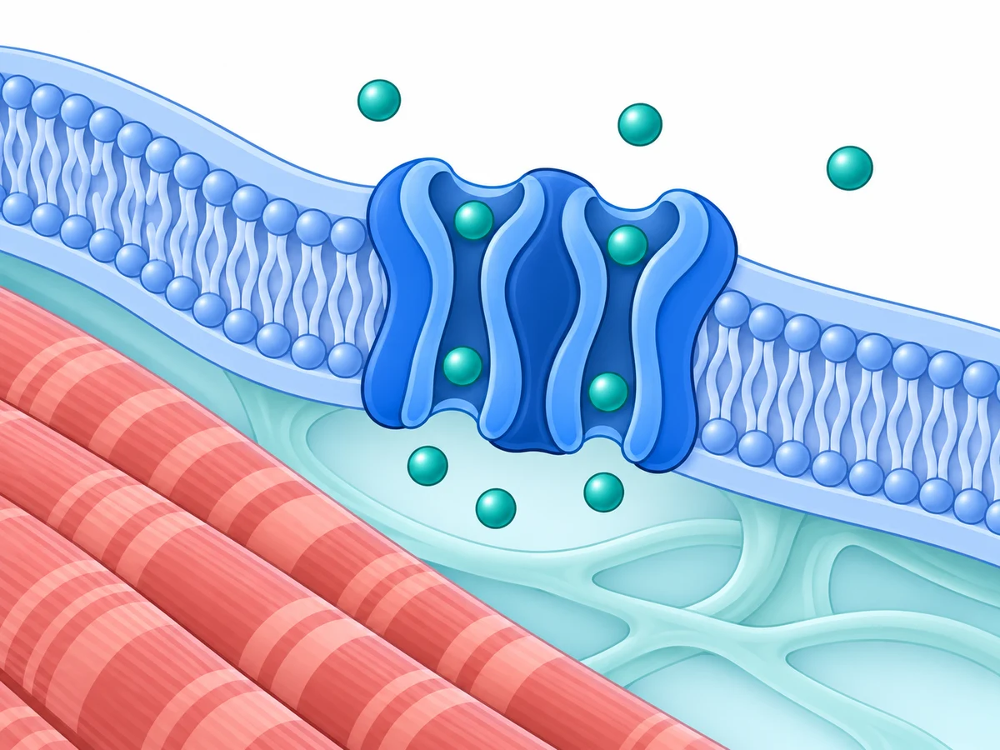

Your browser is blocking saved progress. Keep this page open to finish the round.

Select a piece to begin
Tap a piece, then tap its matching space.
Gene knowledge is optional. The picture reveals the answer.
Choose a mode before placing your first piece.
Community resources:
FIG. 01 / CELL MEMBRANESCHEMATIC · NOT TO SCALE
You explored channels, transporters, RNA machinery, and signaling pathways. Keep the illustrations and scientific connections in your field guide.
Choose any round. Each illustration explores a different biological process. New here? Start with round 01.
View collection →
Start a separate player before the next person uses this device.
Clues appear at 2, 4, 6, and 8 pieces. The gene appears at 11 and the condition at 12. Clues and image notes appear automatically in the list as you place pieces. A brief animation connects each discovery to the image. On a phone, the newest clue stays beneath the image; the full list is below the puzzle. Clues also opens the list without leaving the board. Tap a numbered marker to revisit an image note. Gene hint opens beside the puzzle. Follow the biological clues first, then request a symbol hint if needed. Choose from the Gene bank or type a gene. Gene recognition is optional: a gene symbol or unambiguous product name completes the round early. Hints are available whenever you need them. Finishing the image always reveals the answer.
Tab to a piece and press Enter. Use the arrow keys to move between board positions and Enter to place it. Escape returns to the tray.
Untimed is the default. Choose Untimed or Timed in Round settings before your first successful placement. Hints, picture views, and selecting pieces do not start the timer. Timed mode starts with your first correct placement or accepted gene answer and keeps counting across reloads and background tabs. Timing measures puzzle play, not clinical knowledge. Your new attempts are saved in this browser, including untimed and gene-answer completions. Add a display name on the home-page leaderboard to share your progress without an account. The public board shows your summary; your attempt history stays private. Only all-piece Timed completions qualify for the timed rankings. Sound is on by default; mute it in the header. Your preference is saved.
Progress stays in this browser. Round settings → Restart resets this puzzle and keeps its attempt history. Browse rounds → New player clears local progress, history, and the saved name for the next visitor. Published results remain on the leaderboard. To remove them, choose Leave leaderboard on the home page first.
The final piece settles, the frame catches light, and selected structures move within the original illustration. Use the control beneath the image to pause or resume. Enlarge illustration opens the same animated puzzle in an expanded view. Reduced-motion settings keep the image still and let you read the guide step by step. The first completion guides you through three image notes, then continues with ambient motion. Follow the image replays that guide. Tap the highlighted terms in the connection to locate structures, or a dotted-underlined term for a definition. Tap a numbered marker or open Revisit your clues to read at your own pace. Visit Science for the full clinical profile, or print your completed rounds from the Collection field guide.
Restarting resets this puzzle. Your recorded attempts stay in your player history.
This saves any pending public results, then clears the name, player history, and puzzle progress from this browser. Published results stay on the leaderboard. The next visitor starts as a separate player at round 01.